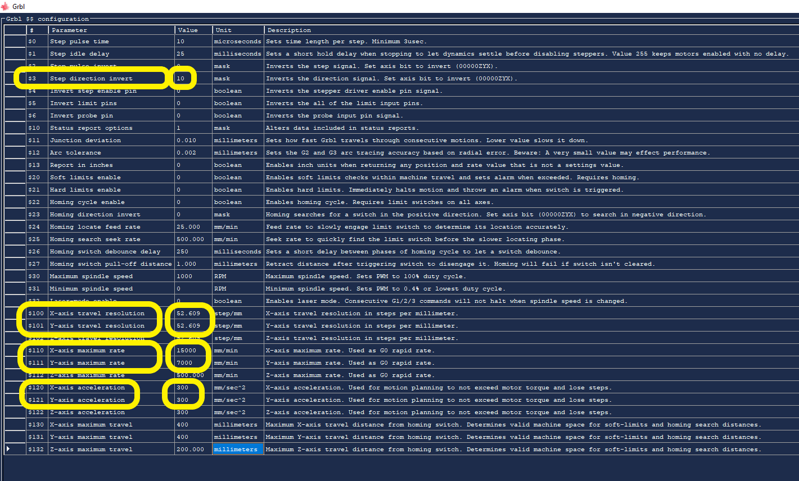

Mechanical Design, Machine Design
Mechanical Design (part 1 of 2)
Group assignment
- Design a machine that includes mechanism + actuation + automation
- Build the mechanical parts and operate it manually.
- Document the group project
Individual Project
- Document your individual contribution.
Machine Design (part 2 of 2)
Group assignment
- Actuate and automate your machine.
- Document the group project
Individual Project
- Document your individual contribution.
Learning outcomes:
- Work and communicate effectively in a team and independently
- Design, plan and build a system
- Analyze and solve technical problems
- Recognize opportunities for improvements in the design
Have you?
- Documented the machine building process to the group page
- Documented your individual contribution to this project on your own website
- Linked to the group page from your individual page as well as from group page to your individual pages
Group Assignment
Go to group assignment page
Frankenlaser cutter
Design Files and Gcode files @ github repo (to big for this server)
I gave it the name Frankenlaser because many of its parts come from retired machines I once design and fabricated. Its a machine again just like my CNC made with parts I had laying around as well as commercial parts.
I designed the machine with solidworks and used the CNC in the bottom of this page that I also designed to cut the carbon fiber and the OSB parts.
Mechanical Design (part 1 of 2)
With the mechanical design ready I started preparing the bits and pieces.
I am using 30x30 aluminum profiles, they came in 3 meters bars and needed to be cut to size.

the most precise way I could cut the profiles was with a wood saw. I know that it is made for wood, but also know that I could cut aluminum as long as I use it slowly. I then leveled the saw blade to 90 degrees in reference to the table saw.
The cut was perfect.
Next I began with the tracks, they were very dirty. So I started with the cleaning.

And like magic they are clean; first I removed the tracks from the sliders and left them aside. I used WD40, a scotch brite sponge for the rust and acetone to remove oil and dust. I oiled it finally with machine oil.

Now the sliders... equally dirt I disassembled the plastic covers and dropped the little bearing balls into a recipient.

With the sliders disassembled I used the same cleaning steps with the same products as before.

With a paper towel I dried it all

And again like magic they are like new.
To have an idea of the final product I placed the parts resting on top of each other. Nice!
A different perspective.
The view from ArtCam.
I then started cutting the carbon fiber. It cuts easily on my CNC but I was in a hurry so I did not want to clean double face tape and have to clean its glue latter. This decision will have consequences, watch the next videos for it.

Here I drill the holes.
In this video I cut many of the contours because I did not use double face tape or tabs the parts jumped from the stock in a way they could meet demise if touched by the blade. So I removed the pieces as the machine spit it out.
All the parts cut and ready for assembly.
With a digital angle finder I made sure the parts were squared.

Here the support of the other side.
Here the laser head support assembled.

And now it is assembled.

And the laser head attached. The laser head will hold the focus lens when the laser is ready.

Moving the X axis.
Moving it again.
Here the hole assembly is ready.

Now I test all axis by hand and this part one is done.
Machine Design (part 2 of 2)
Index
- Milling and Assembly External Frame
- Frame Assembly to Axis
- Wiring
- Burning the firmware
- First Test
- Setting up GRBL
- Second Test
It moves!
The machine is speaking and with its immature voice it spoke "Hello World"
How did I get there? Lets see the steps:
- Milling and Assembly External Frame
- Frame Assembly to Axis
- Wiring
- Burning the Firmware
- First Test
- Setting up GRBL
- Second Test
.....

.....
.....
.....
.....
.....

.....
.....
.....
.....

.....
.....

.....
.....
.....
.....
.....
.....
.....
.....
.....
.....
.....
.....
.....
.....
.....
.....

.....
.....
.....